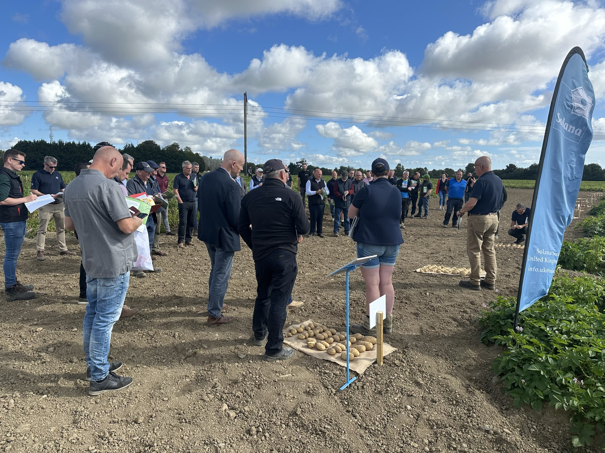

At Haggard Stores, our commitment to agricultural innovation has never been stronger. In the dynamic world of potato farming, where growers constantly face challenges like rising production costs, strict fertilizer use regulations, and the phasing out of various chemicals, we've taken proactive steps. Our primary goal: to identify and cultivate potato varieties that not only thrive under these evolving conditions but also align with the specific needs of Crisping Processors and Fresh Chip manufacturers. In 2021, we embarked on a comprehensive journey, reaching out to numerous potato breeders across Europe. Our mission was simple yet ambitious: to find new potato varieties that could adapt to Irish growing conditions, flourish with reduced fertilizer inputs, and meet the rigorous standards of processing specifications from harvest to storage. Our efforts bore fruit in 2022 with the planting of 28 different crisping varieties under stringent farming conditions. We didn't just grow these varieties; we meticulously monitored them, analyzing yield, dry matter content, tuber characteristics, and crucial processing factors like reducing sugars. But our work didn't stop there. Recognizing the evolving industry needs, we expanded our 2023 trials to include 27 crisp varieties and introduced 20 new chipping varieties. This ongoing endeavor underscores our dedication to supporting Irish potato growers, helping them navigate this changing landscape sustainably and profitably.
Discover how Haggard Stores is revolutionizing potato farming with new varieties tailored for sustainability and efficiency, catering to both Crisping Processors and Fresh Chip industries.
Over the years our growers have been facing new challenges on an ongoing basis with increasing costs of production, ever increasing restrictions on fertiliser use and ongoing loss of various chemistry used in the production of potatoes, the need for varieties with a low carbon footprint. This is particularly the case in the potato sector where it is getting more and more challenging every year. We made a decision that we needed to find new varieties that the perform well with these criteria in mind but also meet with Crisping Processors & Fresh Chip needs and got them involved to ensure that the varieties we trailed were suitable for their requirements at the various stages in the storage and calendar year. So in 2021 we contacted most of the different potato breeders all across Europe looking for new potato varieties that may be suitable to Irish growing conditions, that would perform with reduced fertiliser inputs and that we could manage will the loss of various plant protection protects. Also most importantly supply processing specifications from off the field right through to July the following year out of store ensuring good cooking quality. In 2022 we planted 28 different crisping varieties in 4m x 50m plots, these were grown commercially under current farming restrictions. In August each year before harvesting we have open day where we invite all Irish potato growers to view the plots growing we had organised representatives from the various potato breeders to attend where they met and discussed various topics on their varieties from growing to harvesting and storage attributes. We harvest and put into a commercial Store. At harvest we measured all the varieties yields and dry matters, tuber counts and sizes etc, noted any defects and measured their reducing sugars which is critical in processing. Defects and Sugars were checked each month from October until end of June the following year. We have concluded our results to these trials grown in 2022 in a report for the growers and the processing sector and will do the same again this year. We have continued the trial for 2023 with 27 crisp varieties but this time we have added Chipping Varieties. For Crisping we screened the varieties and selected which the ones we put in our trial for 2023 and added new ones on breeders recommendations and scrutiny of variety specifications. We have selected 20 Chip varieties as in previous trial we researched, on breeder recommendations and discussions with chipping industry. That would grow well under Irish conditions, store well and deliver the specifications and cooking quality that industry expects from off the field all the way through to end of June out of storage. With our trials programme we are endeavouring to support the Irish potato grower in this ever changing environment helping them grow sustainably and profitably into the future, the correct specifications and quality all year round that the processing industry expects. Up to now large amounts of the fresh chip industry has been supplied from the UK, lack of potato quality and reliability of supply are the reasons the industry give for this.
Potato storage is a key element of modern-day potato production, looking to fulfil the demands of many markets. It can be practiced successfully but it must also be acknowledged that storage poses a risk. Its success depends on how well that risk is managed and, ultimately, whether the customer for the crop in question is delivered the quality for which they are prepared to pay. So, ensuring a store runs efficiently is a critical part of managing the potato production system. Inevitably, there are cost pressures on all components of the supply chain and, therefore, it is just as important to minimise operating costs in storage as it is to maximise returns from the enterprise.To this end, having good control of the store is crucial so that it only incurs cost when delivering a benefit. This control extends to such aspects as:
Store management is a complex process and there are multiple points at which problems and inefficiencies can occur and jeopardise the prospect of success. It should be remembered that the crop in the store came from a field where there was opportunity to influence many attributes that affect how the crop performs in store, from simple decisions, including choice of variety, to more complex issues, such as the impact of chronological age on dormancy break and the need for sprout suppression. Another major factor in storage success is whether the crop has an adequately ‘set’ skin, as, without this, storage of potatoes is seldom straightforward.
Dimethylnaphalene (DMN) given off by potatoes themselves naturally, was identified in Glasgow by Dr Harry Duncan, during the early 1980’s and was confirmed as being an effective sprout suppressant in its own right. 1,4 SIGHT® received Registration Approval for the use in Ireland, following on from Netherlands, Belgium, Germany, France, Austria and Poland. 1,4 SIGHT® was recognized and further developed commercially by 1,4Group and has been used veryeffectively as a treatment for controlling potato sprouts in a number of countries including the USA, Canada and New Zealand since 1995. 1,4 SIGHT® is a dormancy enhancer (sprout suppressant) which prolongs dormancy in stored potatoes and is reversible. 1,4 SIGHT® can be used to reduce CIPC inputs or as a stand-alone product. It is normally applied as a vapour (usually hot) to stored potatoes. 1,4 SIGHT® can be used as a sole treatment for the long term processing material (9 degrees) at up to 6 times 20ppm **. Application is made via an electro fogger machine which does not release any CO² emissions into the store. 1,4 SIGHT® can also be used as a sparing chemical in conjunction with CIPC to help avoid exceedences.1,4 SIGHT® can be applied early or later but before chitting has taken place. 1,4 SIGHT® penetrates through the potato skin and works internally to restore its dormancy. Dormancy lowersthe respiration rate, slowing the loss of moisture and solids, thereby diminishing shrink and susceptibility to pressure bruise. Restoring dormancy may also shorten the post-harvest “sweat period”. Sprout and chit control, pressure bruising and shrinkage are quality issues that store managers face each year. Incorporating 1,4 SIGHT® into your storage treatment regime can provide unprecedented success in managing these common storage challenges. Maintaining dormancy helps retain potato firmness resulting in fresher appearing skin finish and fewer load downgrades. ** Actual rates depend on store variety, temperatures, venting and the condition of the potatoes. Studies conducted at Sutton Bridge Experimental Unit, 1,4 SIGHT® demonstrated very good sprout control compared to CIPC.